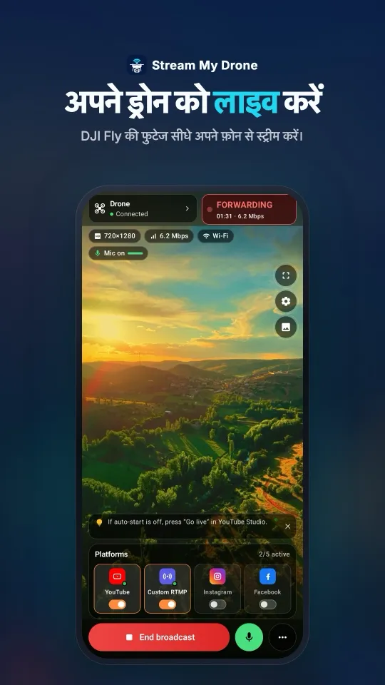
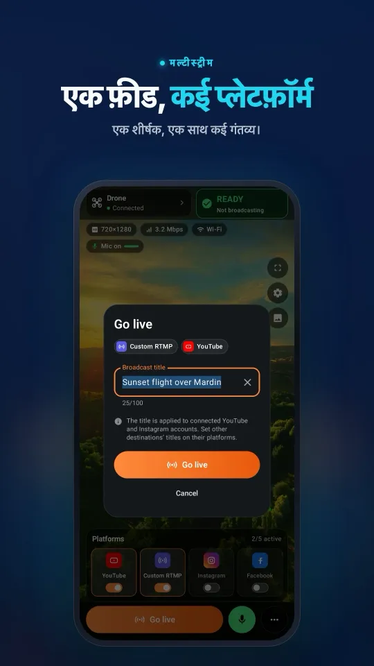
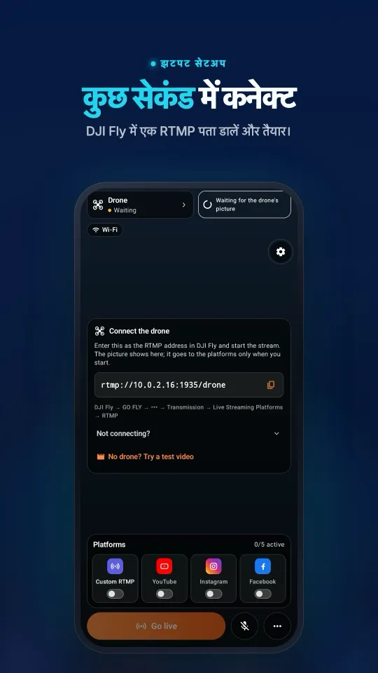
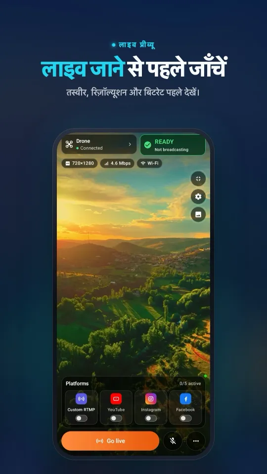
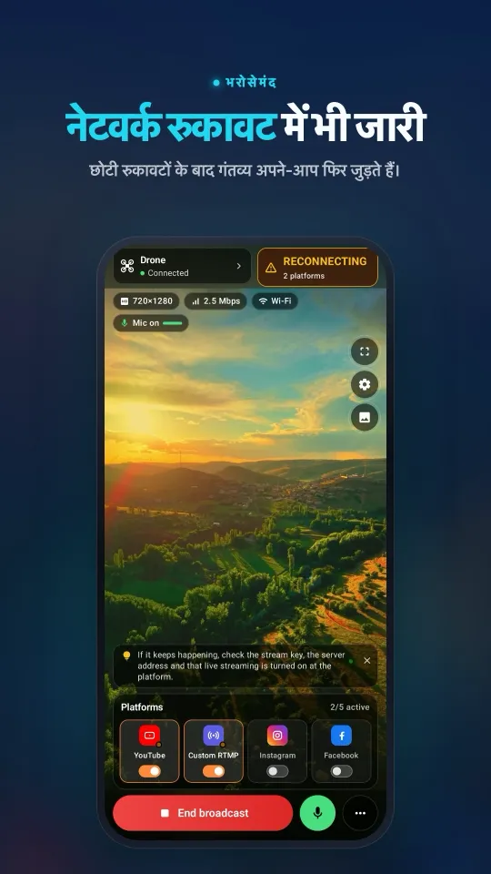

DJI ड्रोन से Instagram पर लाइव कैसे जाएँ
Instagram Live स्ट्रीमिंग सॉफ़्टवेयर से आने वाली स्ट्रीम स्वीकार करता है। instagram.com → Create (+) → Live video खोलें, स्ट्रीम URL और स्ट्रीम की Stream My Drone में कॉपी करें, DJI Fly से ड्रोन की तस्वीर ऐप को भेजें, START LIVE दबाएँ, और आख़िर में Instagram पर Go live दबाएँ। Instagram हर प्रसारण के लिए नई की देता है।
संक्षेप में
- Instagram का स्ट्रीम URL और की कंप्यूटर पर instagram.com से मिलते हैं: Create (+) → Live video।
- की एक ही बार चलती है: हर प्रसारण से पहले गंतव्य कार्ड पर “Update key” से इसे अपडेट करें।
- Instagram वर्टिकल वीडियो चाहता है; ऐप 1080×1920, 30 fps, 2 सेकंड के कीफ़्रेम वाला H.264 भेजता है।
- प्रसारण तभी सार्वजनिक होता है जब आप ख़ुद Instagram पर Go live दबाते हैं।
- आप वही तस्वीर एक साथ TikTok, YouTube या Facebook पर भी भेज सकते हैं।
आपको क्या चाहिए
- ऐसा DJI ड्रोन जिसके DJI Fly ऐप में Live Streaming Platforms के नीचे RTMP हो।
- Mac या Windows PC पर Stream My Drone, कंट्रोलर वाले Wi-Fi या हॉटस्पॉट पर।
- ऐसा Instagram अकाउंट जिसमें instagram.com पर Create के नीचे Live video दिखता हो। अगर नहीं दिखता, तो Instagram ने उस अकाउंट को अभी यह विकल्प नहीं दिया है।
Instagram पर लाइव जाएँ, चरण-दर-चरण
- ड्रोन जोड़ेंDJI Fly में GO FLY → ••• → Transmission → Live Streaming Platforms → RTMP खोलें, Stream My Drone में दिख रहा पता डालें और शुरू करें। ऐप में प्रीव्यू दिखने लगता है।
- Instagram पर लाइव वीडियो बनाएँinstagram.com पर Create (+) → Live video पर क्लिक करें, शीर्षक दें, दर्शक चुनें और आगे बढ़ें।
- स्ट्रीम URL और की कॉपी करेंInstagram एक Stream URL (जैसे
rtmps://edgetee-upload-….fbcdn.net:443/rtmp/) और एक Stream key दिखाता है। दोनों को Stream My Drone में Instagram गंतव्य में चिपकाएँ। - START LIVE दबाएँVertical 9:16 चालू रहने दें। कुछ ही सेकंड में Instagram की विंडो में ड्रोन की तस्वीर प्रीव्यू के रूप में दिखने लगती है।
- Instagram पर Go live दबाएँअब जाकर आपके फ़ॉलोअर्स प्रसारण देखते हैं। ख़त्म करने के लिए उसे Instagram पर बंद करें और ऐप में End stream दबाएँ।
अगली बार Instagram पर नया लाइव वीडियो खोलें और गंतव्य कार्ड पर Update key इस्तेमाल करें: पुरानी की अब काम नहीं करती।
आपके फ़ोन पर ऐसा दिखता हैDJI Fly कनेक्शन से लेकर कई प्लेटफ़ॉर्म पर प्रसारण तक, सब एक ही स्क्रीन पर।




Instagram को कौन सी सेटिंग्स चाहिए
| सेटिंग | Stream My Drone |
|---|---|
| रेज़ोल्यूशन | 1080×1920 (वर्टिकल 9:16) |
| फ़्रेम रेट | 30 fps |
| वीडियो | H.264 High, 6 Mbps CBR |
| कीफ़्रेम | हर 2 सेकंड |
| प्रोटोकॉल | RTMPS (एन्क्रिप्टेड) |
ड्रोन लैंडस्केप में शूट करता है। Whole picture पूरा फ़्रेम रखता है और ऊपर-नीचे की जगह उसकी धुंधली नकल से भरता है; Fill screen फ़ोन की स्क्रीन भरने के लिए किनारे काट देता है।
आम समस्याएँ
- कनेक्शन तुरंत विफल हो गया: की पहले ही इस्तेमाल हो चुकी है। Instagram पर नया लाइव वीडियो खोलें और की अपडेट करें।
- Instagram का प्रीव्यू काला रहता है: START LIVE के बाद कुछ सेकंड रुकें; फिर भी काला रहे तो जाँचें कि ऐप के प्रीव्यू में ड्रोन दिख रहा है।
- फ़ॉलोअर्स लाइव नहीं देख पा रहे: Instagram पर Go live दबाएँ — स्ट्रीम प्राप्त होना और उसे प्रकाशित करना एक बात नहीं है।
- Create के नीचे Live video नहीं है: अकाउंट के पास वेब पर अभी यह विकल्प नहीं है; यह Instagram तय करता है।
सवाल
क्या मैं DJI ड्रोन से Instagram पर लाइव जा सकता हूँ?
हाँ। DJI Fly आपके कंप्यूटर पर Stream My Drone को RTMP भेजता है, और ऐप उसे instagram.com से मिले स्ट्रीम URL और की के साथ Instagram तक पहुँचाता है।
Instagram हर बार नई स्ट्रीम की क्यों माँगता है?
Instagram हर लाइव वीडियो के लिए नई की जारी करता है। हर प्रसारण से पहले ऐप में Update key से इसे अपडेट करें।
क्या मैं एक साथ Instagram और TikTok पर स्ट्रीम कर सकता हूँ?
हाँ। दोनों गंतव्य चालू करें; तस्वीर एक बार एनकोड होकर हर एक को भेजी जाती है। दोनों वर्टिकल वीडियो चाहते हैं, इसलिए एक ही सेटिंग दोनों के लिए ठीक है।
क्या मुझे OBS चाहिए?
नहीं। Stream My Drone स्ट्रीम सीधे Instagram को भेजता है; OBS वैकल्पिक है।
क्या ड्रोन की आवाज़ भी जाती है?
डिफ़ॉल्ट रूप से DJI Fly जो ऑडियो भेजता है वह आगे जाता है। आप कमेंट्री के लिए कंप्यूटर पर माइक्रोफ़ोन भी चुन सकते हैं, या स्ट्रीम म्यूट कर सकते हैं।
अपने फ़ोन से ड्रोन को लाइव करें
Android और iPhone के लिए Stream My Drone, DJI Fly की तस्वीर लेकर उसे YouTube, Instagram, Facebook, TikTok, Twitch, Kick या आपके अपने सर्वर पर, एक साथ कई जगह भेजता है। एक बार की ख़रीद, कोई सब्सक्रिप्शन नहीं।

और गाइड
DJI Flip से लाइव स्ट्रीम कैसे करें
RC 2, RC-N3 या RC-N2 के साथ DJI Flip से लाइव स्ट्रीम करें: फ़ोन और कंप्यूटर पर RTMP सेटअप, पाम और फ़ोन कंट्रोल का अंतर, वर्टिकल फ़्रेमिंग और प्लेटफ़ॉर्म जाँच।
DJI Lito X1 से लाइव स्ट्रीम कैसे करें
RC 2, RC-N3 या RC-N2 के साथ DJI Lito X1 से लाइव स्ट्रीम करें: DJI Fly RTMP सेटिंग, फ़ोन और कंप्यूटर के तरीके, प्लेटफ़ॉर्म सेटअप और काम की समस्या-समाधान टिप्स।
DJI Lito 1 से लाइव स्ट्रीम कैसे करें
RC 2, RC-N3 या RC-N2 के साथ DJI Lito 1 से लाइव स्ट्रीम करें: DJI Fly RTMP सेटिंग, फ़ोन और कंप्यूटर के तरीके, प्लेटफ़ॉर्म सेटअप और काम की समस्या-समाधान टिप्स।
DJI Air 3S से लाइव स्ट्रीम कैसे करें
DJI Air 3S से YouTube, Instagram या Facebook पर लाइव स्ट्रीम करें। controller चुनें, DJI Fly RTMP को फ़ोन या कंप्यूटर से जोड़ें और बाहर जाने वाली तस्वीर जाँचें।
DJI Air 3 से लाइव स्ट्रीम कैसे करें
DJI Air 3 से YouTube, Instagram या Facebook पर लाइव जाएँ: RC 2 या RC-N2 चुनें, DJI Fly RTMP को फ़ोन या कंप्यूटर से जोड़ें और प्रसारण से पहले बाहर जाने वाली तस्वीर जाँचें।
DJI Mavic 4 Pro से लाइव स्ट्रीम कैसे करें
RC 2 या RC Pro 2 के साथ DJI Mavic 4 Pro से फ़ोन या कंप्यूटर पर लाइव स्ट्रीम करें। DJI Fly RTMP, माइक्रोफ़ोन का अंतर, 720p सीमा और प्लेटफ़ॉर्म सेटअप जाँचें।
DJI Mavic 3, Classic या Pro से लाइव स्ट्रीम कैसे करें
RC-N1 या RC Pro के साथ DJI Mavic 3, Classic या Pro से लाइव स्ट्रीम करें। जानें DJI RC से स्ट्रीम क्यों नहीं होती, फ़ोन रिसीवर, डेस्कटॉप RTMP और क्वालिटी की सीमाएँ।
DJI Mini 3 Pro से लाइव स्ट्रीम कैसे करें
RC-N1, फ़ोन पर DJI Fly और कंप्यूटर पर Stream My Drone से DJI Mini 3 Pro की लाइव स्ट्रीम करें। जानें पुराना DJI RC यह RTMP तरीका क्यों इस्तेमाल नहीं कर सकता।
DJI Mini 3 से लाइव स्ट्रीम कैसे करें
RC-N1 और DJI Fly के ज़रिए कंप्यूटर पर Stream My Drone तक DJI Mini 3 की लाइव स्ट्रीम सेट करें। DJI RC की सीमा, 720p लाइव व्यू क्वालिटी और प्लेटफ़ॉर्म प्रकाशन जाँचें।
DJI Mini 5 Pro से लाइव स्ट्रीम कैसे करें
RC 2 या RC-N3 के साथ DJI Mini 5 Pro से लाइव स्ट्रीम करें। DJI Fly में RTMP सेट करें, फ़ोन या कंप्यूटर इस्तेमाल करें और ड्रोन का वीडियो YouTube, Instagram या Facebook पर भेजें।
DJI Mini 4 Pro से लाइव स्ट्रीम कैसे करें
RC 2 या RC-N2 के साथ DJI Mini 4 Pro से लाइव स्ट्रीम करें। फ़ोन और कंप्यूटर सेटअप, DJI Fly की RTMP सेटिंग्स, माइक्रोफ़ोन की ज़रूरत और प्लेटफ़ॉर्म की जाँच, सब एक गाइड में।
DJI ड्रोन से लाइव जानवरों को पहचानें और गिनें
Stream My Drone ड्रोन की लाइव तस्वीर में बकरी, भेड़, गाय, घोड़े, गधे और मुर्गियाँ पहचानता है, स्ट्रीम पर उन्हें चिह्नित करता है और गिनता है, सब कुछ आपके अपने कंप्यूटर पर।
DJI Fly RTMP लाइव स्ट्रीमिंग: पूरा सेटअप
DJI Fly में RTMP लाइव स्ट्रीमिंग कैसे सेट करें: सेटिंग कहाँ है, कौन सा पता डालना है, कंट्रोलर और कंप्यूटर को एक नेटवर्क पर कैसे जोड़ें और समस्या हो तो कैसे ठीक करें।
DJI Fly से Instagram पर लाइव स्ट्रीम क्यों नहीं होती (और इसका हल)
DJI Fly में Instagram का विकल्प नहीं है और उसका RTMP क्लाइंट Instagram के लिए ज़रूरी एन्क्रिप्टेड RTMPS नहीं भेज सकता। जानिए क्यों, और फिर भी DJI ड्रोन से Instagram पर लाइव कैसे जाएँ।
अपने DJI ड्रोन को कंप्यूटर का वेबकैम बनाएँ
Stream My Drone के वर्चुअल कैमरे से अपने DJI ड्रोन को TikTok LIVE Studio, OBS, Zoom, Google Meet या Teams के लिए वेबकैम बनाएँ। सेटअप, उपयोग के आइडिया और समस्याओं के हल।
DJI Neo से लाइव स्ट्रीम कैसे करें
DJI Neo से लाइव स्ट्रीम कैसे करें: कौन सा कंट्रोल मोड चलता है (फ़ोन, RC-N3, गॉगल्स), DJI Fly में RTMP, और Stream My Drone से Instagram, TikTok या YouTube पर लाइव जाना।
DJI Avata 2 से लाइव स्ट्रीम कैसे करें
DJI Avata 2 की FPV फ़ुटेज लाइव स्ट्रीम कैसे करें: Goggles 3 का व्यू फ़ोन पर DJI Fly से साझा करें, RTMP पर स्ट्रीम करें और Instagram, TikTok या YouTube पर लाइव जाएँ।
अपने DJI Osmo कैमरे से Instagram, TikTok और दूसरे प्लेटफ़ॉर्म पर लाइव स्ट्रीम करें
DJI Mimo, Osmo Action, Osmo Pocket और Osmo 360 कैमरों से RTMP पर स्ट्रीम कर सकता है। उसे Stream My Drone पर भेजें और एक साथ Instagram, TikTok और YouTube पर लाइव जाएँ।
Osmo Pocket 3 से Instagram और TikTok पर लाइव स्ट्रीम कैसे करें
DJI Osmo Pocket 3 से DJI Mimo के RTMP पर एक साथ Instagram, TikTok और YouTube पर लाइव स्ट्रीम कैसे करें, और Stream My Drone से इसे वायरलेस वेबकैम कैसे बनाएँ।
Osmo Action कैमरे से Instagram और TikTok पर लाइव स्ट्रीम कैसे करें
Stream My Drone से DJI Osmo Action 6, 5 Pro, 4 या 3 को DJI Mimo के RTMP पर एक साथ Instagram, TikTok, YouTube और Twitch पर लाइव स्ट्रीम करें। सेटअप और सही सेटिंग्स।
DJI ड्रोन से TikTok पर लाइव कैसे जाएँ
DJI Fly से अपने DJI ड्रोन को TikTok पर लाइव स्ट्रीम करें: TikTok स्ट्रीम की के साथ, या बिना की के TikTok LIVE Studio और वर्चुअल कैमरे से। सेटिंग्स और समस्याओं के हल।
DJI ड्रोन से YouTube पर लाइव स्ट्रीम कैसे करें
DJI ड्रोन से YouTube पर लाइव स्ट्रीम करें: लाइव स्ट्रीमिंग चालू करें, YouTube Studio से स्ट्रीम की कॉपी करें, DJI Fly का RTMP Stream My Drone से भेजें। सेटिंग्स और सुझाव।
DJI ड्रोन से Facebook पर लाइव कैसे जाएँ
DJI ड्रोन से Facebook पर लाइव स्ट्रीम करें: Live Producer से RTMPS सर्वर URL और स्ट्रीम की लें, DJI Fly की स्ट्रीम Stream My Drone के ज़रिए भेजें, और लाइव जाएँ।
DJI ड्रोन से Twitch पर स्ट्रीम कैसे करें
DJI ड्रोन से Twitch पर लाइव स्ट्रीम करें: Creator Dashboard से अपनी स्ट्रीम की कॉपी करें, Stream My Drone में Twitch को कस्टम RTMP गंतव्य के रूप में जोड़ें और लाइव जाएँ।
DJI ड्रोन से Kick पर स्ट्रीम कैसे करें
DJI ड्रोन से Kick पर लाइव स्ट्रीम करें: Kick डैशबोर्ड से स्ट्रीम URL और की कॉपी करें, उन्हें Stream My Drone में कस्टम RTMP गंतव्य के रूप में जोड़ें, और लाइव जाएँ।
DJI ड्रोन से एक साथ कई प्लेटफ़ॉर्म पर स्ट्रीम करें
Stream My Drone से DJI ड्रोन की एक लाइव स्ट्रीम एक साथ TikTok, Instagram, YouTube, Facebook, Twitch और Kick पर भेजें — मुफ़्त, लोकल, बिना किसी रीस्ट्रीम सेवा के।
Stream My Drone बनाम Restream: आपके ड्रोन के लिए कौन सा?
DJI ड्रोन को कई प्लेटफ़ॉर्म पर स्ट्रीम करना है: Restream का क्लाउड रिले या आपके अपने कंप्यूटर पर Stream My Drone? लागत, वॉटरमार्क, Instagram, वर्टिकल वीडियो और कब कौन बेहतर।
बिना NGINX और OBS सेटअप के DJI ड्रोन से स्ट्रीम करें
DJI Fly को OBS में लाने का आम तरीका है NGINX RTMP सर्वर, एक कॉन्फ़िग फ़ाइल और मीडिया सोर्स। जानिए इस सेटअप में क्या-क्या लगता है, और एक ही ऐप से इसे कैसे छोड़ें।